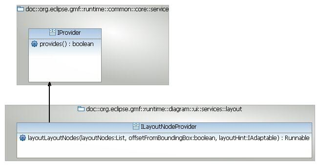
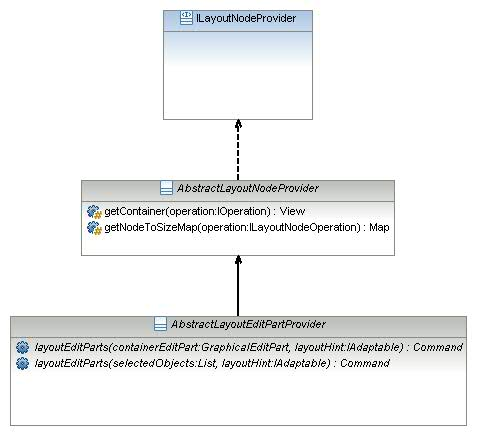
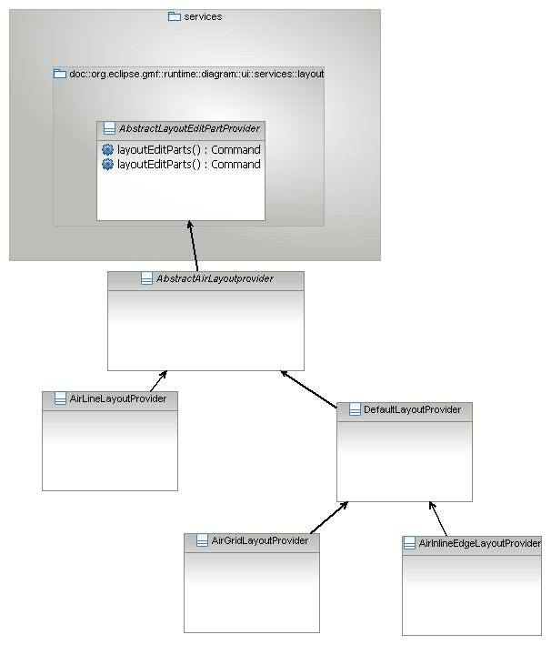
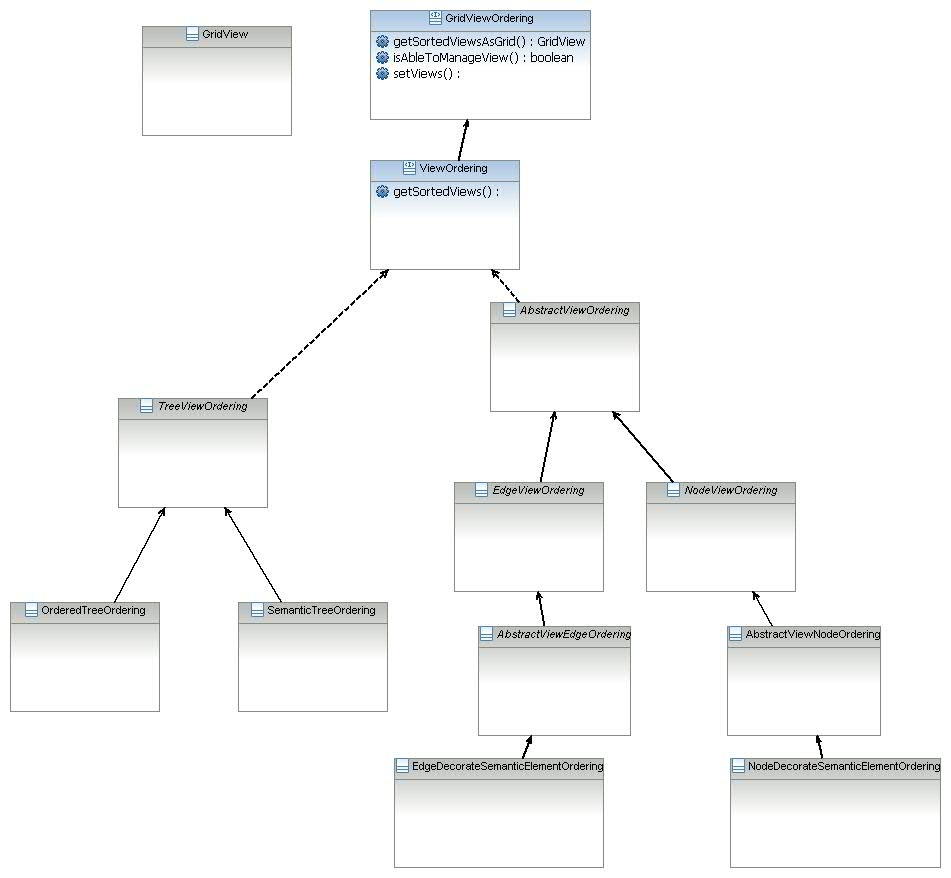
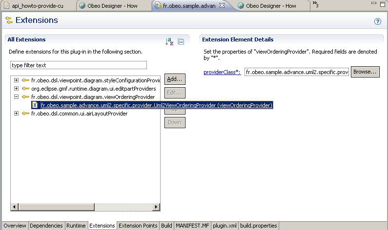
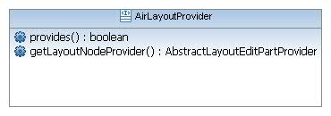

One of the main issues of visual modelers is the global arrangement of all elements. GMF provides a default implementation of an "Arrange All" algorithm to solve this issue but it happens that this default behavior is not adapted for some diagrams. Imagine a diagram representing the hierarchy between a program classes, the "natural" representation a human thinks about is that of a tree. When you add associations on such diagrams, GMF won’t keep the tree representation of the diagram. Sirius provides an API to arrange diagrams according to custom business rules.
GMF provides basic API and implementations to ease the customization of the "Arrange All" mechanism. It also implements a complete algorithm that is based on the graphical elements.
The top level type of this this API is
ILayoutNodeProvider

As you can see, this interface is designed for genericity. Fortunately, GMF provides abstract classes that handle the low-level work while letting you define the business rules:

This can be done by implementing three operations:
boolean provides(IOperation operation)
Command layoutEditParts(GraphicalEditPart containerEditPart, IAdaptable layoutHint)
Command layoutEditParts(selectedObjectst List, IAdaptable layoutHint)
The
provides operation is meant to return true if the class can arrange the diagram for the specified operation.
The
layoutEditParts operations will return the commands that will actually be in charge of arranging the diagrams' edit parts. The first one takes the main container that is to be arranged while the latter accepts a list of edit parts to arrange.
The class
AbstractLayoutEditPartProvider is the simplest one. Sirius provides utility classes to ease the implementation of "Arrange All" algorithms:

Here is a list of all provided layout providers and a basic description of each:
LineLayoutProvider: lays out all views on a single line (either vertical or horizontal).
GrigLayoutProvider: lays out all views as a grid.
InlineEdgeLayoutProvider: lays out connections alongside their source and target nodes (useful on the sequence diagram for example).

All
LayoutProvider provided by Sirius can be used with a
ViewOrdering which has the responsibility of actually ordering the views.
The aim of all these classes is to order the GMF views and to provide this result to an
AbstractLayoutProvider.
Here is a sample ordering all views to get a tree from a list of UML2 packages :
/**
* Orders packages.
*/
public class PackageTreeOrdering extends SemanticTreeOrdering {
public List getSemanticChildren(EObject semanticParent, List candidates) {
List result = Collections.EMPTY_LIST;
if (semanticParent instanceof Package) {
result = new LinkedList<Package>(((Package) semanticParent).getNestedPackages());
result.retainAll(candidates);
}
return result;
}
public List getSemanticRoots(List objects) {
List<Package> roots = new LinkedList<Package>();
for (Object object : objects) {
EObject semantic = (EObject) object;
if (semantic instanceof Package) {
Package package_ = (Package) semantic;
if (package_.eContainer() == null || !objects.contains(package_.eContainer())) {
roots.add(package_);
}
}
}
return roots;
}
}
This tells us how to order the packages. We must notify Sirius that this @ViewOrdering@ has to be used for the Package Hierarchy diagram.
ViewOrderingProvider
Here is the implementation of a
ViewOrderingProvider for an UML2 modeler :
/**
* The view ordering provider for UML2 modeler.
*/
public class Uml2ViewOrderingProvider implements ViewOrderingProvider {
/** The classifier ordering. */
private ClassifierTreeOrdering classifierOrdering = new ClassifierTreeOrdering();
public Uml2ViewOrderingProvider() {
classifierOrdering.setUserAwareCapable(true);
}
public ViewOrdering getViewOrdering(DiagramElementMapping mapping) {
return (ViewOrdering) getMappingToViewOrdering().get(getMappingName(mapping));
}
public boolean provides(DiagramElementMapping mapping) {
return getMappingToViewOrdering().containsKey(getMappingName(mapping));
}
private String getMappingName(DiagramElementMapping mapping) {
String result = null;
if (mapping instanceof NodeMapping) {
result = ((NodeMapping) mapping).getName();
} else if (mapping instanceof EdgeMapping) {
result = ((EdgeMapping) mapping).getName();
} else if (mapping instanceof ContainerMapping) {
result = ((ContainerMapping) mapping).getName();
}
return result;
}
/**
* Returns a map : MappingName(String) -> ViewOrdering.
*
* @return a map : MappingName(String) -> ViewOrdering.
*/
private Map getMappingToViewOrdering() {
Map result = new HashMap();
result.put(Uml2Constants.LIFELINE_MAPPING_NAME, new LifelineOrdering());
result.put(Uml2Constants.MESSAGE_MAPPING_NAME, new MessageOrdering());
result.put(Uml2Constants.CLASS_MAPPING_NAME, this.classifierOrdering);
result.put(Uml2Constants.INTERFACE_MAPPING_NAME, this.classifierOrdering);
return result;
}
}
Once this has been implemented, we need to add the extension to the plugin.xml :

<extension point="org.eclipse.sirius.diagram.viewOrderingProvider">
<viewOrderingProvider providerClass="com.example.uml2.specific.provider.Uml2ViewOrderingProvider" />
</extension>
Now, we know how to both order and arrange views. We still need to let Sirius know that we want to use a custom Layout Provider for a specific Diagram.

Here is a provider designed for an UML2 modeler:
public class Uml2LayoutProvider implements LayoutProvider {
/** The GMF layout provider. */
private CompoundLayoutProvider layoutProvider;
/** The class diagram layout provider. */
private GridLayoutProvider classDiagramLayoutProvider;
/** The package hierarchy layout provider. */
private GridLayoutProvider packageHierarchyLayoutProvider;
public AbstractLayoutEditPartProvider getLayoutNodeProvider(IGraphicalEditPart container) {
if (isSequenceDiagram(container)) {
if (this.layoutProvider == null) {
this.layoutProvider = new CompoundLayoutProvider();
LineLayoutProvider lineLayoutProvider = new LineLayoutProvider();
lineLayoutProvider.getPadding().right = 80;
lineLayoutProvider.setHorizontal(true);
this.layoutProvider.addProvider(lineLayoutProvider);
inlineEdgeLayoutProvider inlineEdgeLayoutProvider = new InlineEdgeLayoutProvider();
inlineEdgeLayoutProvider.setSide(PositionConstants.EAST_WEST);
inlineEdgeLayoutProvider.setStart(PositionConstants.RIGHT);
inlineEdgeLayoutProvider.setAlignment(PositionConstants.VERTICAL);
inlineEdgeLayoutProvider.setChangeNodeHeight(true);
inlineEdgeLayoutProvider.setChangeNodeWidth(true);
inlineEdgeLayoutProvider.getPaddings().top = 50;
this.layoutProvider.addProvider(inlineEdgeLayoutProvider);
}
return this.layoutProvider;
} else if (isClassDiagram(container)) {
return this.getClassDiagramLayoutProvider();
} else if (isPackageHierarchyDiagram(container)) {
return this.getPackageHierarchyLayoutProvider();
}
return null;
}
public boolean provides(IGraphicalEditPart container) {
return (isClassDiagram(container) && isAbleToLayoutClassDiagram(container)) || isSequenceDiagram(container) || isPackageHierarchyDiagram(container);
}
private boolean isSequenceDiagram(IGraphicalEditPart container) {
if (container instanceof AbstractDDiagramEditPart) {
AbstractDDiagramEditPart editPart = (AbstractDDiagramEditPart) container;
if (editPart.resolveSemanticElement() instanceof DDiagram) {
DDiagram diagram = (DDiagram) editPart.resolveSemanticElement();
if (viewPoint.getDescription() != null) {
DiagramDescription diagramDescription = diagram.getDescription();
return Uml2Constants.SEQUENCE_DIAGRAM_DESCRIPTION_NAME.equals(diagramDescription.getName());
}
}
}
return false;
}
private boolean isClassDiagram(IGraphicalEditPart container) {
if (container instanceof AbstractDDiagramEditPart) {
AbstractDDiagramEditPart editPart = (AbstractDDiagramEditPart) container;
if (editPart.resolveSemanticElement() instanceof ViewPoint) {
DDiagram diagram = (DDaiagram) editPart.resolveSemanticElement();
if (diagram.getDescription() != null) {
DiagramDescription diagramDescription = diagram.getDescription();
return Uml2Constants.CLASS_DIAGRAM_DESCRIPTION_NAME.equals(diagramDescription.getName());
}
}
}
return false;
}
private boolean isPackageHierarchyDiagram(IGraphicalEditPart container) {
if (container instanceof AbstractDDiagramEditPart) {
AbstractDDiagramEditPart editPart = (AbstractDDiagramEditPart) container;
if (editPart.resolveSemanticElement() instanceof DDiagram) {
DDiagram diagram = (DDiagram) editPart.resolveSemanticElement();
if (viewPoint.getDescription() != null) {
DiagramDescription diagramDescription = diagram.getDescription();
return Uml2Constants.PACKAGE_HIERARCHY_DIAGRAM_DESCRIPTION_NAME.equals(diagramDescription.getName());
}
}
}
return false;
}
private boolean isAbleToLayoutClassDiagram(IGraphicalEditPart container) {
if (container instanceof DiagramEditPart) {
int nbNoInherance = 0;
int nbInheritance = 0;
Iterator iterConnections = ((DiagramEditPart) container).getConnections().iterator();
while (iterConnections.hasNext()) {
ConnectionEditPart connectionEditPart = (ConnectionEditPart) iterConnections.next();
EObject semantic = connectionEditPart.resolveSemanticElement();
if (semantic != null && semantic instanceof DecorateSemanticElement) {
EObject realSemantic = ((DecorateSemanticElement) semantic).getTarget();
if (realSemantic instanceof Generalization) {
nbInheritance++;
} else {
nbNoInherance++;
}
} else {
nbNoInherance++;
}
}
return nbInheritance > nbNoInherance;
}
return false;
}
/**
* Returns the class diagram layout provider.
*
* @return the class diagram layout provider.
*/
public GridLayoutProvider getClassDiagramLayoutProvider() {
if (classDiagramLayoutProvider == null) {
classDiagramLayoutProvider = new GridLayoutProvider();
classDiagramLayoutProvider.setColumnSizeMode(GridLayoutProvider.DIMENSION_BY_LINE_OR_COLUMN);
classDiagramLayoutProvider.setLineSizeMode(GridLayoutProvider.DIMENSION_BY_LINE_OR_COLUMN);
classDiagramLayoutProvider.getPadding().top = 20;
classDiagramLayoutProvider.getPadding().bottom = 20;
classDiagramLayoutProvider.getPadding().left = 20;
classDiagramLayoutProvider.getPadding().right = 20;
}
return classDiagramLayoutProvider;
}
public GridLayoutProvider getPackageHierarchyLayoutProvider() {
if (packageHierarchyLayoutProvider == null) {
packageHierarchyLayoutProvider = new GridLayoutProvider();
packageHierarchyLayoutProvider.setColumnSizeMode(GridLayoutProvider.DIMENSION_BY_LINE_OR_COLUMN);
packageHierarchyLayoutProvider.setLineSizeMode(GridLayoutProvider.DIMENSION_BY_LINE_OR_COLUMN);
packageHierarchyLayoutProvider.getPadding().top = 20;
packageHierarchyLayoutProvider.getPadding().bottom = 20;
packageHierarchyLayoutProvider.getPadding().left = 30;
packageHierarchyLayoutProvider.getPadding().right = 30;
}
return packageHierarchyLayoutProvider;
}
public boolean isDiagramLayoutProvider() {
return false;
}
}
Finally, we add the extension in the plug-in file :
<extension point="org.eclipse.sirius.diagram.layoutProvider">
<layoutProvider priority="high" providerClass="com.example.uml2.specific.provider.Uml2LayoutProvider">
</layoutProvider>
</extension>
The bordered nodes layout arranges all the bordered nodes which are connected to one edge. This arrange reduces the path of the edge between each extremity.
Currently, the layout of the bordered nodes is activated on the default Layout Provider (CompositeDownTopProvider, CompositeLeftRightProvider and OrderedTreeLayoutProvider. To enable the bordered nodes layout on a new LayoutProvider, in the method getLayoutNodeProvider(IGraphicalEditPart), you must create a new BorderItemAwareLayoutProvider with your own LayoutProvider in parameter. This new BorderItemAwareLayoutProvider must be return instead of your own.
Example of the OrderedTreeLayoutProvider
public AbstractLayoutEditPartProvider getLayoutNodeProvider(IGraphicalEditPart container) {
if (isDDiagramWithConfiguredOrderedTreeLayout(container)) {
//Get the expected layout provider
AbstractLayoutProvider layoutNodeProvider = getGridLayoutProvider();
//Create new BorderItemAwareLayoutProvider
layoutNodeProvider = BorderItemAwareLayoutProviderHelper.createBorderItemAwareLayoutProvider(layoutNodeProvider);
//Return the BorderItemAwareLayoutProvider which wrap the previous one
return layoutNodeProvider;
} else {
return null;
}
}